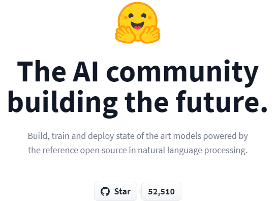

"Introducción al Procesamiento Lenguaje Natural, un enfoque clínico."
Introducción al PLN Clínico. Evolución de la I.A.
Ignacio Martinez Soriano
15-Oct-2021 (Lorca) Webminar

Unidad Técnica Snomed-CT
Hospital Universitario "Rafael Mendez"
PLN-Clinical
- Introduction.
- Procesamiento Lenguaje Natural.
- Word Embeddin.g
- Casos de Uso Enfoque Clínico.
- Librerias y Frameworks
- Referencias en España de PLN
- Conclusiones y Propuestas
1. Introduction:
Introduction:
¿De dónde partimos?
En Agosto de 1955 el profesor de Matemáticas, John McCarthy, organiza una Conferencia en la Universidad de Dartmouth, donde se define el concepto de Inteligencia Artificial, denotándola como un proceso por el que "una máquina se puede comportar de formas que serían llamadas inteligentes si un ser humano hiciera eso"

¿Cómo se genera el Conocimiento?
Todo origen proviene de un "Dato". (DataCentric)
Fuente: matrixcpmsolutions.comImagen
Sistema Tradicional VS Sistema M.L (IA)
¿Cómo aprende un algoritmo?
Machine Learning:
Disciplinas dentro de la I.A.

¿Donde se encuentra el PLN?:
¿Qué tćnicas utiliza?

Como aplicar ML al tipo de problemas
Cada problema tiene un algoritmo (1/3)
Como aplicar ML al tipo de problemas
Cada problema tiene un algoritmo (2/3)

Como aplicar ML al tipo de problemas
Cada problema tiene un algoritmo (3/3)

Ciclo de Vida del M.L.(1/2)
La clave está en el autoaprendizaje. o Ajuste de pesos.
Fuente: AWS AmazonImagen
Ciclo de Vida del M.L.(2/2)
La clave está en el autoaprendizaje. o Ajuste de pesos.

Fuente: AWS AmazonImagen
2. Procesamiento Lenguaje Natural
Definición PLN:
Es un campo dentro de la inteligencia artificial y la lingüística aplicada que estudia las interacciones mediante uso del lenguaje natural entre los seres humanos y las máquinas. Más concretamente se centra en el procesamiento de las comunicaciones humanas, dividiéndolas en partes, e identificando los elementos más relevantes del mensaje. Con la Comprensión y Generación de Lenguaje Natural, busca que las máquinas consigan entender, interpretar y manipular el lenguaje humano.
Fuente(decisiones.es): decisiones.es
Modelos para el PLN (1/2)
Tratar computacionalmente una lengua implica un proceso de modelización matemática.
Existen dos aproximaciones generales al problema de la modelización lingüística:
- Modelos Lógicos: gramáticas
- Los lingüistas escriben reglas de reconocimiento de patrones estructurales, empleando un formalismo gramatical concreto.
- Reflejan la estructura lógica del lenguaje y surgen a partir de las teorías de N. Chomsky en los años 50.
Fuente: IIC
Modelos para el PLN (2/2)
- Modelos probabilísticos del lenguaje natural: basados en datos
- La idea es que basado en colecciones de ejemplos y datos (corpus) y a partir de ellos se calculan las frecuencias de diferentes unidades lingüísticas (letras, palabras, oraciones) y su probabilidad de aparecer en un contexto determinado.
- Calculando esta probabilidad, se puede predecir cuál será la siguiente unidad en un contexto dado, sin necesidad de recurrir a reglas gramaticales explícitas.
- Es el paradigma de “aprendizaje automático” que se ha impuesto en las últimas décadas en Inteligencia Artificial: los algoritmos infieren las posibles respuestas a partir de los datos observados anteriormente en el corpus.
Fuente: IIC
Componentes del Procesado Natural
Los análisis se aplican dependiendo del objetivo de la aplicación:
- Análisis morfológico o léxico. Consiste en el análisis interno de las palabras que forman oraciones para extraer lemas, rasgos flexivos, unidades léxica compuestas. Es esencial para la información básica: categoría sintáctica y significado léxico.
- Análisis sintáctico. Consiste en el análisis de la estructura de las oraciones de acuerdo con el modelo gramatical empleado (lógico o estadístico).
- Análisis semántico. Proporciona la interpretación de las oraciones, una vez eliminadas las ambigüedades morfosintácticas.
- Análisis pragmático. Incorpora el análisis del contexto de uso a la interpretación final. Aquí se incluye el tratamiento del lenguaje figurado (metáfora e ironía) como el conocimiento del mundo específico necesario para entender un texto especializado.
Fuente: IIC
Aplicaciones y usos Lenguaje Natural (1/2):

Fuente: IBerdrola Innovación
Aplicaciones y usos Lenguaje Natural (2/2):
- Resumen de textos, consiste en encontrar la idea principal del texto e ignorar lo que no sea relevante.
- ChatBots, deberán ser capaces de mantener una charla fluida con el usuario y responder a sus preguntas de manera automática.
- Generación automática de keywords y generación de textos.
- Reconocimiento de entidades, encontrar personas, entidades comerciales o gubernamentales, países, ciudades, marcas…etc.
- Análisis de sentimientos, deberá comprender si un tweet, una review o comentario es positivo o negativo y en qué magnitud (neutro). Muy utilizado en redes sociales, en política, opiniones de productos y en motores de recomendación.
- Machine Translation, Ofrece la posibilidad traducir el texto o el audio de un idioma a otro rápidamente y cada vez con más exactitud.
- Clasificación automática de textos, en categorías pre-existentes, detectar temas recurrentes y crear las categorías.
Fuente: Baoss.es
Técnicas clásicas utilizadas en el análisis:
- Tokenizar: separar palabras del texto en entidades llamadas tokens, con las que trabajaremos luego. Deberemos pensar si utilizaremos los signos de puntuación como token, si daremos importancia o no a las mayúsculas y si unificamos palabras similares en un mismo token.
- Tagging Part of Speech (PoS): Clasificar las oraciones en verbo, sustantivo, adjetivo preposición, etc

- Shallow parsing / Chunks: Sirve para entender la gramática en las oraciones.
- Bag of words: (Sparse Vector)es una manera de representar el vocabulario que utilizaremos en nuestro modelo y consiste en crear una matriz en la que cada columna es un token y se contabilizará la cantidad de veces que aparece ese token en cada oración (representadas en cada fila).
- Word Embedding, representación de las palabras en un espacio vectorial, según el contexto..
Fuente: Baoss.es
3. Word embedding:
La Idea inicial ya la dió Cervantes:
En España tenemos un refran:“Dime con quien andas y te diré quien eres”[El Quijote II, 10 y 23]
El significado semántico de una palabra,
depende de las palabras que las rodea.Word Embedding está basado en la idea de que la información contextual por sí sola constituye una representación viable de términos lingüísticos
In en lingüistica computacional, se usa el término de modelo de distribución semántica, las entidades lingüisticas con una distribución similar tiene mismo significado.
Evolution:
- In 2003 Bengio et al. propuso un modelo de lenguaje neuronal que aprendía de la depresentación en la distribución de palabras.
- Collobert and Westorn(2008) fue el primer trabajo que mostró la utilizada de los moddelos pre-entrenados de "word embeddings"
- In 2013 Mikolov et al. propuso Word2Vec, con dos enfoques, continous bag-of-word and skip-gram, para construir una representación de distribución de vectores de gran calidad.
¿Qué es Word2Vec?

- La entrada esun vector "One hot" con todas las palabras del texto
- una capa oculta, con size el tamaño del vector de cada palabra.
- Una capa de salida, utilizada como SoftMax clasificador.
Word2vec tiene dos enfoques CBOW(Continuous bag of words) y Skip-gram model.
Aprende los pesos que actuan en cada representación del vector con un tamaño de ventana, sobre el contexto de cada palabra.

The training method of word2vec is backpropagation with stochastic gradient descent.

El truco de Word2Vec es:
No tiene una función de activaciń en la capa oculta de las neuronas, utiliza como clasificador en la salida Softmax, para la generación de la distribución de probabilidad.
Realmente, la meta es aprender los pesos de la capa oculta, ya que esta será los vectores de cada palabra.
La capa oculta representa el vector de cada palabra dentro del espacio vectorial generado.
Distancia de Similaridad:
Se utiliza la distancia del Coseno, para identificar la similaridad entre conceptos (vectores)

Este sistema es el que se utiliza para identificar a las palabras según el contexto.:
Caso de uso Snomed2Vec
Aplicación de "Word Embeddings", adaptando Word2Vec a Snomed-CT.
Paper presentado en el Congreso internacional CBMS2019
Acceso a la presntación: Presntación del Articulo Snomed2Vec. Congreso CMBS2019 - Cordoba
4. Transformers:
Transformers:
En un paper de Google de finales del año 2017 - “Attention is All You Need” - se presentó la arquitectura del Transformer, un modelo que tenía como principal innovación la sustitución de las capas recurrentes, como las LSTMs que se venían usando hasta ese momento en PLN, por las denominadas capas de atención.
Estas capas de atención codifican cada palabra de una frase en función del resto de la secuencia, permitiendo así introducir el contexto en la representación matemática del texto, motivo por el cual a los modelos basados en Transformer se les denomina también Embeddings Contextuales.
Los Word Wmbeddings que se generan, son dinámicos, dependiendo del contexto.
Diseño(1/2):
Fuente(iia.uam.es): Instituto Conocimiento.es
Diseño(2/2):
BERT:
Bidirectional Encoder Representations from Transformers
BERT es un framework de propósito general en una gran variedad de treas de NLP, "Question Answering (SQuAD v1.1)", Clasificación (MNLI), y otros.
El sistema aprende el lenguaje de una gran cantidad de texto plano, interpretando y comprendiendo la cohesión del texto. Permitiendo que se pueda afinar los ajustes, para adaptarlo a cualquier tarea específica.
BERT aplicaciones principales:
Ajustes dependiendo del problema:

- Tareas de Clasificacion, como análisis de sentimientos.
- Preguntas y Respuetas (SQuAD). Se le hace una pregunta y responde según el texto.
- NER. (Reconocimiento de Entidades Nombradas). Se marca las plabras según el tipo de Entidad( Persona, Organizacion, Fecha...)
- Resumen de Textos. Permite realizar un resumen del contenido de un texto, al extraer los conceptos principales.
Todo estos procesos son posibles al ajuste en el entrenamiento del modelo (Fine-Tuning)
Transfer Learning:
Comunidad HuggingFace:
Fuente(iia.uam.es): Huggingface

5. Casos de Uso Enfoque Clinico:
Análisis HCE:
Mapeo Conceptos Clínicos:
Permite identificar el diagnóstico y procedimientos, desde el texto libre. asociando el concepto a un código de una terminología clínica.( ICD-10-MC,Snomed-CT..)

Normalemente este proceso es el que realiza un humano experto.
Enfoque de una herramienta NER:
Se propuso una herramienta para ayudar a los médicos a buscar en Snomed-CT y encontrar el código del concepto médico.
Snomed2Vec, es una herramienta de reconocimiento de entidades nombradas basada en ontologías que utiliza "word embeddings", para sugerir cuál es el concepto más parecido de Snomed-CT, del que aparece en un texto.
Snomed2Vec, buscador semántico. Sugiere cual es el concepto mas similar, agrupado por sus jerarquías, de Snomed-CT.
6. Librearias y Frameworks:
Librerias adaptadas a Español:
Spark-NLP:

7. Referencias en España de PLN:
Plan Nacional de Tecnologías del Lenguaje:
El objetivo general del Plan de Impulso de las Tecnologías del Lenguaje es desarrollar la industria del procesamiento del lenguaje natural, la traducción automática y los sistemas conversacionales en España
Repositorio Github, Modelos y UtilidadesUnidad Tecnica Barcelona Super Computador:
Unidad de Mineria de TextosPlan de Tecnologías del Lenguaje:
Proyectos y Tareas (sharedTask), para la mejora lenguaje Médico:
8. Conclusiones y Propuestas:
Conclusiones:
- Es posible utilizar las últimas técnicas de PLN al ámbito médico ocn resultados prometedores
- Seria interesante poner en común que se está haciendo en otras Comunidades sobre este tema.
- Repositorio de Soluciones PLN en Sanidad
THE END
Autores:
- Ignacio Martínez Soriano